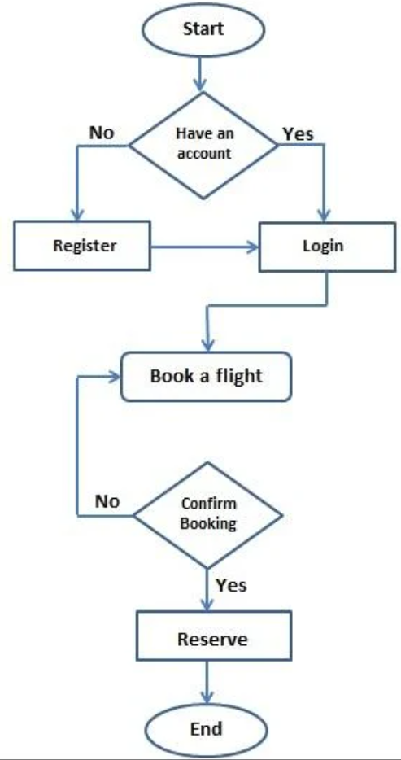
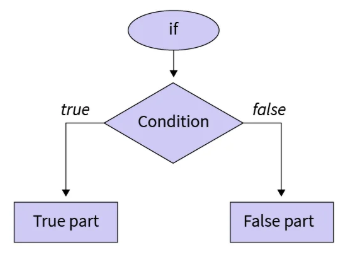
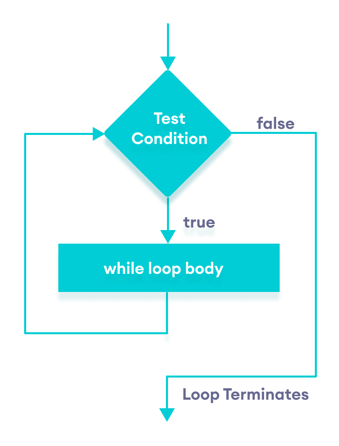
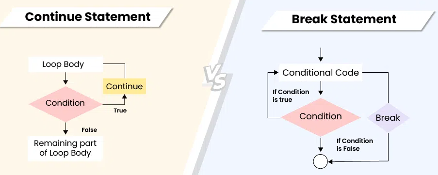
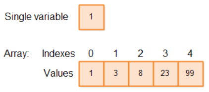
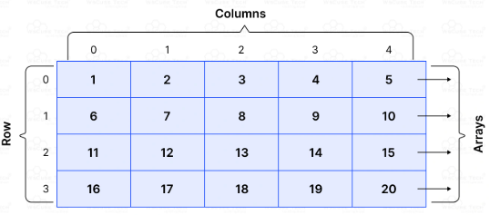

1. Control de Flujo: Condicional y bucles

1.1. Conceptos fundamentales
- La ejecución de código siempre es secuencial.
- ¿Qué ocurre si queremos ejecutar un código bajo ciertas condiciones o queremos ejecutarlo n veces y por lo tanto romper la ejecución secuencial por defecto?
- Existen varias sentencias que permiten controlar la manera en cómo un bloque de código se ejecuta, rompiendo de esta manera la ejecución secuencial tradicional.
- Estas sentencias especiales son: if-then, if-then-else, switch, while, do-while, for, for-each.
1.2. Condicional "if-then"
Permite ejecutar un bloque de código bajo ciertas condiciones.
Estructura:
if (booleanExpression) {
//Bloque de código a ejecutar en caso de que la
//expresión sea cierta
}
Ejemplo:
public class IfExample {
public static void main(String ... name) {
int hour = 3;
if (hour < 4) {
System.out.println("Hour is less than 4");
}
if (hour == 3) {
System.out.println("Hour is equal to 3");
hour++;
}
System.out.println("Hour is: " + hour);
}
}1.3. Condicional "if-then-else"
Permite ejecutar un bloque de código bajo ciertas condiciones y en caso contrario ejecuta otro bloque de código.
Estructura:
if (booleanExpression) {
//Bloque de código a ejecutar en caso de que la
//expresión sea cierta
} else {
//Bloque de código a ejecutar en caso de que la
//expresión sea falsa
}Ejemplo:
public class IfElseExample {
public static void main(String ... name) {
int hour = 20;
if (hour < 12) {
System.out.println("Good morning");
} else if (hour < 20) {
System.out.println("Good afternoon");
} else {
System.out.println("Good evening");
}
}
}1.4. Operador ternario "? :"
Es otra manera de hacer un "if-then-else" de forma compacta.
Estructura: booleanExpression ? expression1 : expression2
- El primer operando ha de ser una expresión booleana
- El segundo y tercer operando ha de ser cualquier operación que devuelva un valor
- Si la expresión booleana es cierta se ejecuta expression1, en caso contrario expression2. Solo se evalúa una expresión.
Ejemplo:
public class TernaryOp {
public static void main(String ... name) {
int y = 10;
int x = (y > 5) ? (1 * y) : (3 * y); // Simple devolve algo;
System.out.println("X is: " + x);
}
}1.5. Condicional "switch"
Se evalúa un valor y el programa nos redirige a la primera línea de código donde hay una coincidencia (sentencia case).
Características:
- Si no hay ninguna coincidencia nos redirige a la sentencia default, si hay.
- Si no hay sentencia default nos redirige a la primera línea de código fuera del "switch".
- Tipos de datos que acepta: byte, short, char, int, String, Byte, Short, Character, Integer, enums. No soporta ni boolean, Boolean, ni long, Long.
- Las variables de los case han de ser constantes del mismo tipo que la variable a testear. Sólo se aceptan literales, "constantes" enums o "constantes final".
- La sentencia "break" permite que la ejecución salga de la sentencia "switch".
Estructura:
switch(variableToTest) {
case constantExpression1:
//Bloque de código para case1;
break;
case constantExpression2:
//Bloque de código para case2;
break;
…
default:
//Bloque de código para default;
}Ejemplo:
public class SwitchCase {
public static void main(String ... name) {
int dayOfWeek = 2;
switch(dayOfWeek) {
case 0:
System.out.println("Monday");
break;
case 1:
System.out.println("Tuesday");
break;
case 2:
System.out.println("Wednesday");
break;
case 3:
System.out.println("Thursday");
break;
case 4:
System.out.println("Friday");
break;
case 5:
System.out.println("Saturday");
break;
case 6:
System.out.println("Sunday");
break;
default:
System.out.println("Out of range");
break;
}
}
}1.6. Bucle "while"
Permite ejecutar un bloque de código de forma reiterada mientras se dé una condición determinada.
- Durante la ejecución, la expresión booleana se verifica antes de cada iteración y finaliza cuando devuelve un "false".
Estructura:
while(booleanExpression) {
//Body
}
Ejemplo:
public class WhileLoop {
public static void main(String ... name) {
int x = 0;
while (x < 5) {
System.out.println("X is: " + x);
x++;
}
}
}1.7. Bucle "do-while"
Permite ejecutar un bloque de código de forma reiterada mientras se dé una condición determinada, al menos una vez.
- Durante la ejecución, la expresión booleana se verifica después de cada iteración y finaliza cuando devuelve un "false".
Estructura:
do {
//Body
} while(booleanExpression);Ejemplo:
public class DoWhile {
public static void main(String ... name) {
int x = 0;
do {
x++;
} while(false);
System.out.println("X is: " + x);
}
}1.8. Bucle "for"
Permite ejecutar un bloque de código de forma reiterada mientras se dé una condición determinada.
Estructura:
for(initialization; booleanExpression; updateStatement) {
//Body
}Secuencia de ejecución:
- Se ejecuta la sentencia de inicialización
- Si la condición booleana es "true" continúa, si es "false" se detiene
- Se ejecuta el cuerpo
- Se ejecuta la sentencia de actualización
- Vuelve a leer la condición booleana
Notas importantes:
- La sección de initialization y updateStatement puede contener múltiples sentencias separadas por comas.
- Las variables declaradas en el "for" o dentro del "for" sólo pueden usarse en este ámbito. No son accesibles desde fuera. Al revés sí es posible.
Ejemplo:
public class ForExample {
public static void main(String ... name) {
for(int i = 0; i < 10; i++) {
System.out.println("I is: " + i);
}
}
}1.9. Bucle "for-each"
Es un tipo de "for" mejorado que sirve para recorrer Arrays y objetos del tipo Collection.
Estructura:
for(datatype instance : collection) {
//Body
}Nota: De momento nosotros usaremos el "for-each" con Arrays. Recordad que un array es una variable que almacena valores del mismo tipo.
Ejemplo:
public class ForEach {
public static void main(String ... name) {
String names[] = new String[3];
names[0] = "name[0]";
names[1] = "name[1]";
names[2] = "name[2]";
for(String aux : names) {
System.out.println(aux);
}
}
}2. Control de Flujo Avanzado: Break y Continue
2.1. Conceptos generales
Todas las sentencias estudiadas pueden contener etiquetas (labels) de forma opcional que permiten controlar el flujo de ejecución.
Estas etiquetas son usadas por las sentencias "break" y "continue" para dejar de ejecutar una sentencia de flujo o continuar desde ella respectivamente.
2.2. Sentencia "break"
Transfiere el control de flujo fuera de la sentencia (while, for, switch, etc.)
Estructura:
optionalLabel: while (booleanExpression) {
//Body
//Somewhere in the loop
break optionalLabel;
}Características:
- Sin la etiqueta el break finalizaría el bucle donde estuviera alojado
- La etiqueta permite finalizar un bucle más externo
Ejemplo:
public class BreakExample {
public static void main(String ... args) {
int[][] list = {{1,13,5},{2,2,5},{3,7,2}};
int searchValue = 2;
int positionX = -1;
int positionY = -1;
PARENT_LOOP: for(int i = 0; i < list.length; i++) {
for(int j = 0; j < list[i].length; j++) {
if(list[i][j] == searchValue) {
positionX = i;
positionY = j;
break PARENT_LOOP;
}
}
}
if (positionX == -1 || positionY == -1) {
System.out.println("Value " + searchValue + " not found");
} else {
System.out.println("Value " + searchValue + " found at: (" + positionX + "," + positionY + ")");
}
}
}2.3. Sentencia "continue"
Devuelve el control de flujo al bucle más cercano.
Estructura:
optionalLabel: while(booleanExpression) {
//Body
//Somewhere in loop
continue optionalLabel;
}Características:
- A diferencia del "break", la sentencia "continue" devuelve el control de flujo al bucle más cercano, en caso de existir etiqueta, o a la etiqueta propuesta.
Ejemplo:
public class ContinueExample {
public static void main(String ... args) {
FIRST_CHAR_LOOP: for(int a = 1; a <= 4; a++) {
for(char x = 'a'; x <= 'c'; x++) {
if(a == 2 || x == 'b') {
continue FIRST_CHAR_LOOP;
}
System.out.println(" " + a + x);
}
}
}
}
2.4. Tabla resumen: Control de flujo
| Permite etiquetas opcionales | Permite sentencia break | Permite sentencia continue | |
|---|---|---|---|
| if | Yes | No | No |
| while | Yes | Yes | Yes |
| do while | Yes | Yes | Yes |
| for | Yes | Yes | Yes |
| switch | Yes | Yes | No |
3. Arrays N-Dimensionales
3.1. Arrays unidimensionales (N=1)
Conceptos:
- Un array permite guardar un conjunto de datos primitivos u objetos del mismo tipo en una dimensión.
- También suelen llamarse vectores.
- Puedes comparar un array con un tren en donde en cada vagón se almacena un dato.
- Puedes definir el array con la longitud que necesites según el problema que tengas que resolver.

CRUD con Arrays 1D (primitivos):
public class CRUDArray1D {
public static void main(String ... args) {
// CREATE: Crear un array
int[] numeros = new int[5];
int[] numerosInicializados = {10, 20, 30, 40, 50};
// READ: Leer elementos
System.out.println("Primer elemento: " + numerosInicializados[0]);
System.out.println("Todos los elementos:");
for(int num : numerosInicializados) {
System.out.println(num);
}
// UPDATE: Actualizar elementos
numerosInicializados[2] = 99;
System.out.println("Elemento actualizado: " + numerosInicializados[2]);
// DELETE: "Eliminar" (en arrays primitivos se restablece a valor por defecto)
numeros[0] = 0; // Valor por defecto
System.out.println("Elemento eliminado (restablecido): " + numeros[0]);
}
}3.2. Arrays multidimensionales (N>=2 - Matriz)
Conceptos:
- Una matriz permite guardar un conjunto de datos primitivos u objetos del mismo tipo en dos o más dimensiones de forma regular o irregular.
- Una matriz es un conjunto de arrays apilados.
- Puedes definir la matriz con el número de filas o columnas que necesites según el problema que tengas que resolver.

CRUD con Arrays 2D (Matrices):
public class CRUDArray2D {
public static void main(String ... args) {
// CREATE: Crear una matriz
int[][] matriz = new int[3][3];
int[][] matrizInicializada = {{1,2,3}, {4,5,6}, {7,8,9}};
// READ: Leer elementos
System.out.println("Elemento [1][1]: " + matrizInicializada[1][1]);
System.out.println("Todos los elementos:");
for(int i = 0; i < matrizInicializada.length; i++) {
for(int j = 0; j < matrizInicializada[i].length; j++) {
System.out.print(matrizInicializada[i][j] + " ");
}
System.out.println();
}
// UPDATE: Actualizar elementos
matrizInicializada[1][1] = 99;
System.out.println("Elemento actualizado [1][1]: " + matrizInicializada[1][1]);
// DELETE: Eliminar fila (crear nueva matriz sin esa fila)
int[][] matrizReducida = new int[2][3];
int filaOrigen = 0;
for(int i = 0; i < matrizReducida.length; i++) {
if(i != 1) { // Saltar la fila a eliminar (índice 1)
System.arraycopy(matrizInicializada[filaOrigen], 0,
matrizReducida[i], 0, 3);
filaOrigen++;
}
}
}
}